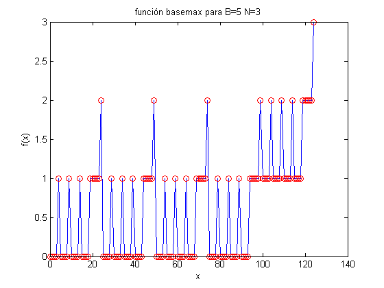
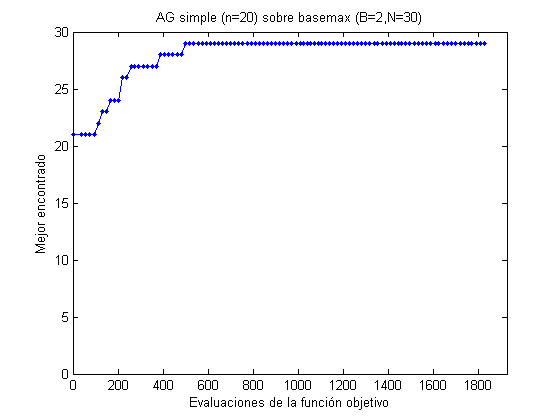
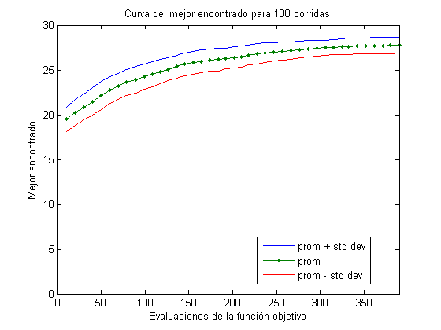

Contents
AG Simple
Vamos a optimizar la función onemax; ésta es una función cuya evaluación es el número de unos que tiene el cromosoma. Tiene una apariencia difícil, pero es realmente sencilla para un AG porque tiene una estructura que puede explotar. Ésta es una gráfica de onemax para cromosomas de longitud N y base B.
N = 3; B = 5; t = 0:1:B^N-1; clear f for i=1:length(t), f(i)=basemax(t(i),B); end plot(t,f,t,f,'or') title(sprintf('función basemax para B=%d N=%d',B,N)) xlabel('x') ylabel('f(x)')
Un AG Simple sobre basemax
Optimizaremos la función basemax con un algoritmo genético. Definimos la función objF para facilitar su uso.
B = 2;
clear objF
objF = @(x) basemax(x,B);
Un AG Simple sobre basemax
Optimizamos la función basemax con un algoritmo genético de cromosomas binarios de N=30 bits, pm=0.1 y pc=0.7. Utilizamos un AG simple con selección de torneo de tamaño 2 y lo corremos por 100 generaciones. La población converge al óptimo.
N = 30; % longitud del cromosoma n = 20; % tamaño de población generaciones = 100; % generaciones que correrá el AG p = population('integer',N,0.1,0.7); p = random(p,n); p = evaluate(p,objF); best = get(p,'best'); e = 0; b = best.fitness; for i=1:generaciones p = tournament(p); p = crossover(p); p = mutation(p); p = evaluate(p,objF); best = get(p,'best'); e(i+1) = get(p,'evals'); b(i+1) = best.fitness; plot(e,b,'.-') axis([0 e(i+1)+100 0 ceil(logB(2^N,B))]) xlabel('Evaluaciones de la función objetivo') ylabel('Mejor encontrado') title(sprintf('AG simple (n=%d) sobre basemax (B=%d,N=%d)',n,B,N)) pause(0.01) end
Curva del mejor encontrado
Para generar la curva del mejor encontrado, corremos múltiples veces el AG simple.
corridas = 100; generaciones = 40; N = 30; % longitud del cromosoma n = 10; % tamaño de la población E = []; Be = []; p = population('integer',N,0.1,0.7); for j=1:corridas p = init(p); p = random(p,n); p = evaluate(p,objF); best = get(p,'best'); e = get(p,'evals'); b = best.fitness; for i=1:generaciones p = tournament(p); p = crossover(p); p = mutation(p); p = evaluate(p,objF); best = get(p,'best'); e(i+1) = get(p,'evals'); b(i+1) = best.fitness; end E = [E e']; Be = [Be b']; x = max(E,[],2); prom = mean(Be,2); fig1 = std(Be,[],2); plot(x,prom+fig1,x,prom,'.-',x,prom-fig1,e,b,'-.k') axis([0 max(max(E)) 0 ceil(logB(2^N,B))]) xlabel('Evaluaciones de la función objetivo') ylabel('Mejor encontrado') title(sprintf('Curva del mejor encontrado para %d corridas',j)) legend('prom + std dev','prom','prom - std dev','ultima corrida',0) pause(0.01) end plot(x,prom+fig1,x,prom,'.-',x,prom-fig1) axis([0 max(max(E)) 0 ceil(logB(2^N,B))]) xlabel('Evaluaciones de la función objetivo') ylabel('Mejor encontrado') title(sprintf('Curva del mejor encontrado para %d corridas',j)) legend('prom + std dev','prom','prom - std dev',0)